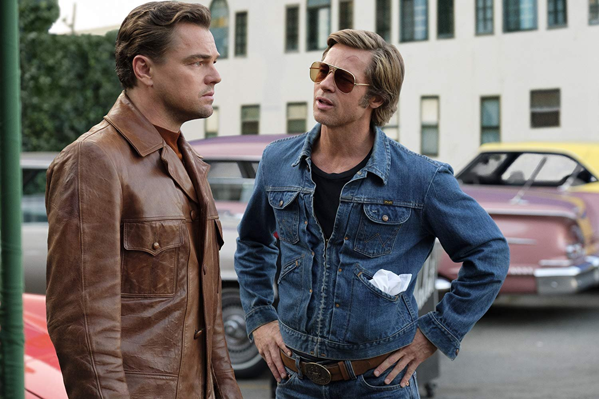

Однажды в… Голливуде
«Однажды в… Голливуде» (англ. Once Upon a Time in… Hollywood) — американский комедийно-драматический фильм 2019 года, сценариста и режиссёра Квентина Тарантино. Спродюсированный Columbia Pictures совместно с Bona Film Group, Heyday Films и Visiona Romantica, картина является совместным производством США и Великобритании. Дистрибьютором фильма выступила компания Sony Pictures Releasing. В ролях — ансамбль актёров, во главе которого Леонардо Ди Каприо, Брэд Питт и Марго Робби. В фильме также снимались Курт Рассел, Эмиль Хирш, Маргарет Куэлли, Тимоти Олифант, Остин Батлер, Дакота Фэннинг, Брюс Дерн и Аль Пачино. Последний фильм с участием Люка Перри, который не дожил до релиза всего пять месяцев. Действие фильма происходит в 1969 году в Лос-Анджелесе, где бывшая звезда ТВ вестернов Рик Далтон (Леонардо Ди Каприо) и его дублер Клифф Бут (Брэд Питт) пытаются найти свое место в стремительно меняющемся мире киноиндустрии. В картине представлен звёздный актёрский состав, а также несколько сюжетных линий, отдающих дань последним моментам Золотого века Голливуда. Сюжет переплетается с реальной историей секты Чарльза Мэнсона и убийства Шерон Тэйт, но сознательно отходит от реальных событий и показывает их вымышленную, альтернативную версию. Анонсированный в июле 2017 года, «Однажды в… Голливуде», стал первым фильмом Тарантино, который не был спродюсирован Харви Вайнштейном и его компаниями Miramax Films и The Weinstein Company, после того, как десятки актрис обвинили его в сексуальных домогательствах. Sony Pictures получила права на релиз, выполнив несколько требований Тарантино, включая финальный монтаж картины. Ди Каприо, Питт и Робби, а также несколько постоянных актёров Тарантино, таких как Зои Белл и Курт Рассел, Майкл Мэдсен и Тим Рот присоединились к актёрскому составу в период между январём и июнем 2018 года. Основные съёмки фильма проходили в Лос-Анджелесе с 18 июня по 1 ноября 2018 года. Премьера картины состоялась 21 мая 2019 года на Каннском фестивале, где после завершения показа зрители устроили фильму шестиминутную овацию. В тот же день компания Sony Pictures Entertainment представила официальный трейлер к фильму. The Hollywood Reporter назвал фильм «любовным письмом Тарантино Голливуду 60-х» и похвалил его кастинг. Фильм вышел в мировой прокат 26 июля 2019 года; в России — 8 августа 2019 года. Картина стала лидером российского проката, собрав за первый уик-энд 516,9 млн рублей
В феврале 1969 года голливудский актёр Рик Далтон, бывшая звезда вестерна 1950-х годов «Охотник за головами», после беседы с продюсером Марвином Шварцем жалуется своему лучшему другу и бывшему дублёру Клиффу Буту, что его карьера закончена и теперь ему остаётся сниматься в телевизионных передачах. Бут — ветеран войны, который живёт в трейлере со своим питбулем Бренди — возит Далтона по городу из-за лишения прав последнего и выполняет его мелкие поручения, надеясь получить работу на съёмочной площадке. Между тем, актриса Шэрон Тейт и её муж, режиссёр Роман Полански, переехали в дом по соседству с Далтоном. Рик мечтает подружиться с парой, чтобы восстановить свой статус. Позже той же ночью Тейт и Полански присоединяются к Джею Себрингу на вечеринке знаменитостей в особняке Playboy.
Классная игра актеров не могла остаться незамеченной. Леонардо Ди Каприо (Рик Далтон), Брэд Питт (Клифф Бут) и Марго Робби (Шэрон Тейт) блестяще справились со своими ролями. Второстепенных персонажей другие актеры тоже отыграли без нареканий. Жаль, что Майклу Мэдсену в этот раз досталась такая маленькая роль… Операторская работа заслуживает наивысшего балла, всевозможные ракурсы позволяют внимательно оценить происходящие события со всех сторон (особенно удались записи с верхних камер). Диалоги же получились средними, до топовых бесед в предыдущих картинах Тарантино им далеко
На Rotten Tomatoes фильм имеет рейтинг одобрения 85 % на основе 503 рецензий со средней оценкой 7,8/10. Критический консенсус сайта гласит: «Захватывающе безудержный, но твердо продуманный „Однажды в Голливуде“ уравновешивает провокационные импульсы Тарантино ясностью видения зрелого режиссёра[23]». Агрегатор рецензий Metacritic, который использует среднее взвешенное значение, присвоил фильму 83 балла из 100, основываясь на 61 рецензии, что указывает на «всеобщее признание[24]». Кинокритик Питер Брэдшоу поставил фильму максимальную положительную оценку, назвав «Однажды в Голливуде» «возмутительным, дезориентирующим развлечением». Некоторыми критиками фильм был расценен как свидетельство консервативного поворота в творчестве Тарантино: «„Однажды в Голливуде“ — это жёсткий удар под дых леволиберальной идеологии, которая захватила и поставила на грань уничтожения старую добрую Америку. По сути, хиппизм… приравнивается Тарантино к фашизму. Старые добрые американские герои, буквально сошедшие с экранов вестернов, ещё способны защитить Америку от гибели с помощью кулака, бойцовой собаки и огнемёта» — отмечает Егор Холмогоров в консервативном издании «Царьград», сравнивая созданный Тарантино образ банды Мэнсона с романом Достоевского «Бесы».